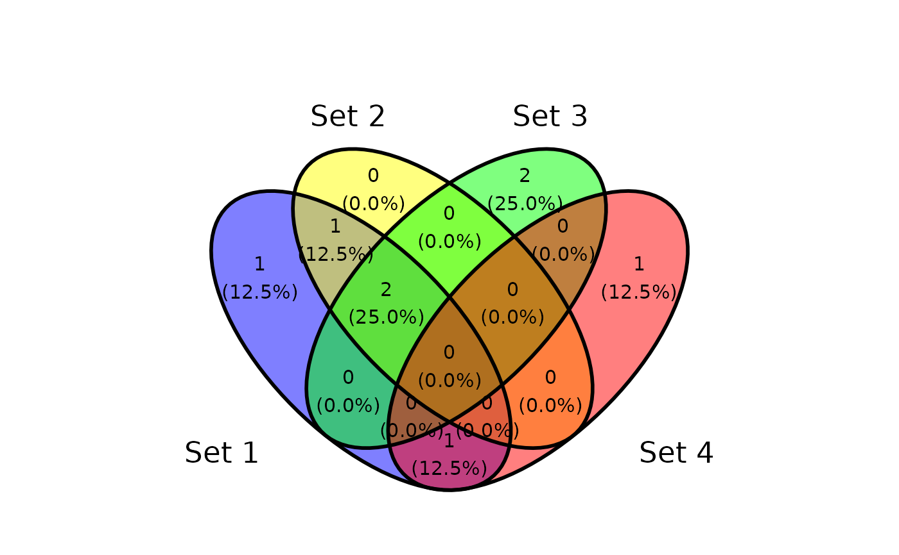
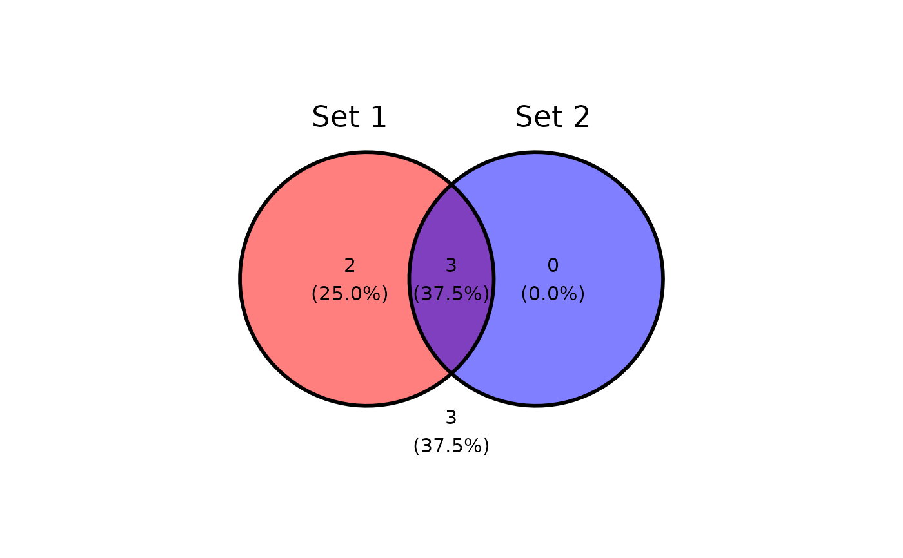
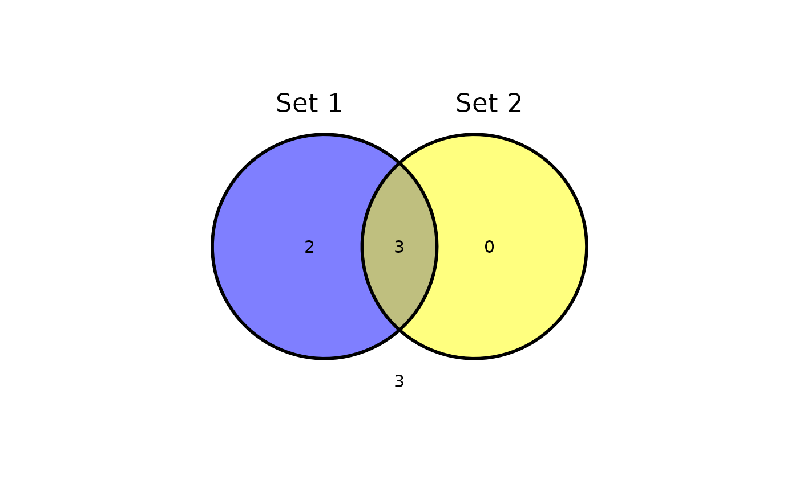
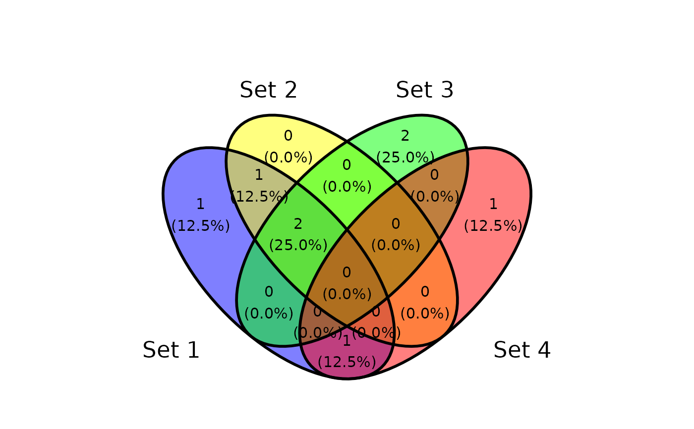
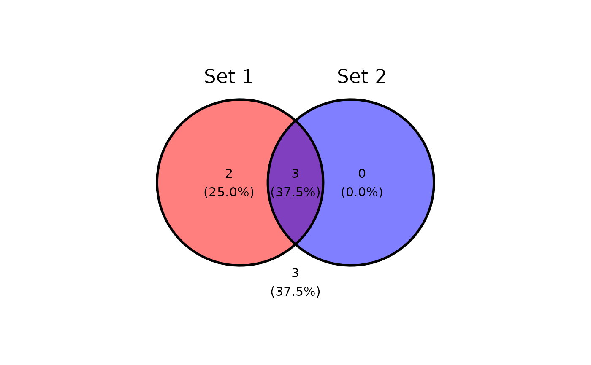
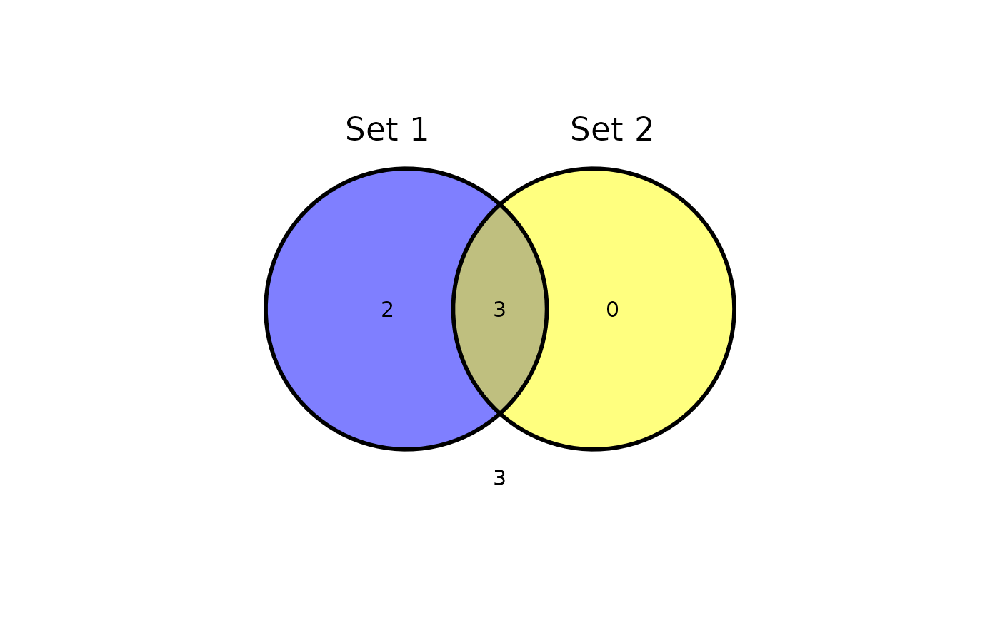
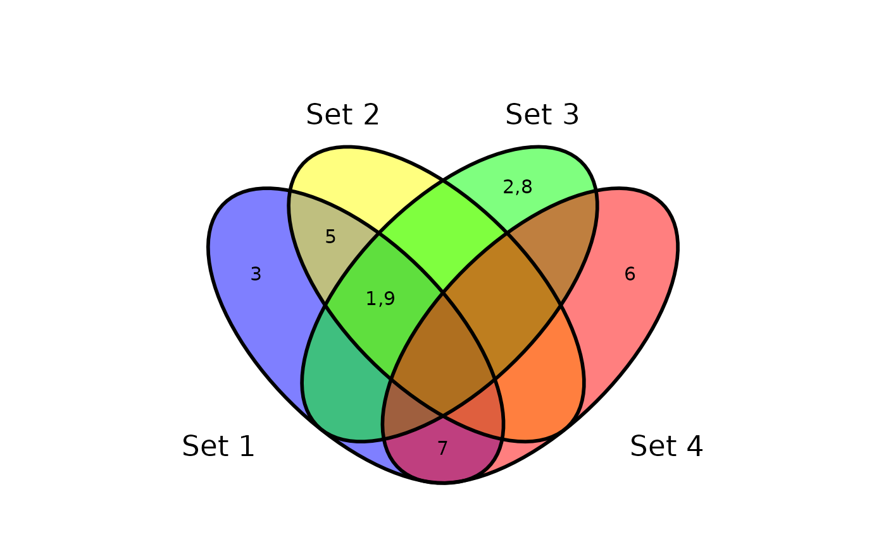
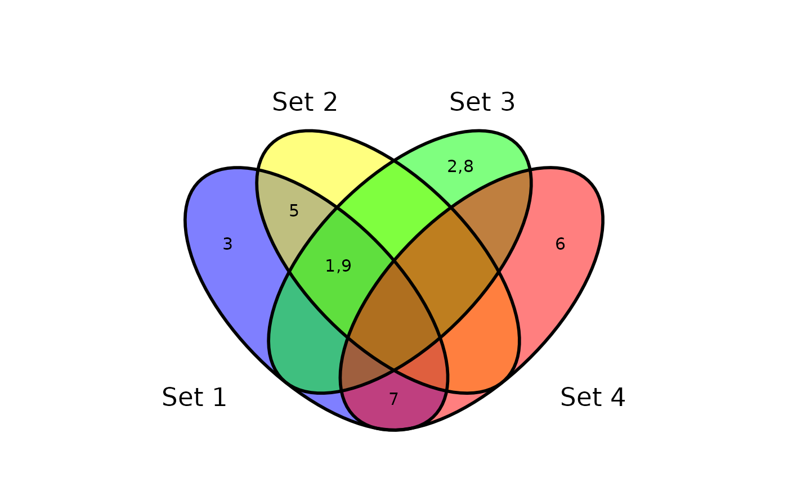

Plot venn diagram as a ggplot layer object. It supports only data frame as input.
geom_venn.RdPlot venn diagram as a ggplot layer object. It supports only data frame as input.
Usage
geom_venn(
mapping = NULL,
data = NULL,
stat = "identity",
position = "identity",
...,
set_names = NULL,
show_percentage = TRUE,
digits = 1,
label_sep = ",",
count_column = NULL,
show_outside = c("auto", "none", "always"),
auto_scale = FALSE,
fill_color = c("blue", "yellow", "green", "red"),
fill_alpha = 0.5,
stroke_color = "black",
stroke_alpha = 1,
stroke_size = 1,
stroke_linetype = "solid",
set_name_color = "black",
set_name_size = 6,
text_color = "black",
text_size = 4
)Arguments
- mapping
Set of aesthetic mappings created by
aes()oraes_(). If specified andinherit.aes = TRUE(the default), it is combined with the default mapping at the top level of the plot. You must supplymappingif there is no plot mapping.- data
A data.frame or a list as input data.
- stat
The statistical transformation to use on the data for this layer, as a string.
- position
Position adjustment, either as a string, or the result of a call to a position adjustment function.
- ...
Other arguments passed on to
layer(). These are often aesthetics, used to set an aesthetic to a fixed value, likecolour = "red"orsize = 3. They may also be parameters to the paired geom/stat.- set_names
Set names, use column names if omitted.
- show_percentage
Show percentage for each set.
- digits
The desired number of digits after the decimal point
- label_sep
separator character for displaying elements.
- fill_color
Filling colors in circles.
- fill_alpha
Transparency for filling circles.
- stroke_color
Stroke color for drawing circles.
- stroke_alpha
Transparency for drawing circles.
- stroke_size
Stroke size for drawing circles.
- stroke_linetype
Line type for drawing circles.
- set_name_color
Text color for set names.
- set_name_size
Text size for set names.
- text_color
Text color for intersect contents.
- text_size
Text size for intersect contents.
Examples
library(ggvenn)
# use data.frame as input
d <- tibble(value = c(1, 2, 3, 5, 6, 7, 8, 9),
`Set 1` = c(TRUE, FALSE, TRUE, TRUE, FALSE, TRUE, FALSE, TRUE),
`Set 2` = c(TRUE, FALSE, FALSE, TRUE, FALSE, FALSE, FALSE, TRUE),
`Set 3` = c(TRUE, TRUE, FALSE, FALSE, FALSE, FALSE, TRUE, TRUE),
`Set 4` = c(FALSE, FALSE, FALSE, FALSE, TRUE, TRUE, FALSE, FALSE))
# ggplot gramma
ggplot(d) +
geom_venn(aes(A = `Set 1`, B = `Set 2`)) +
coord_fixed() +
theme_void()
#> Warning: 'length(x) = 3 > 1' in coercion to 'logical(1)'
#> Warning: 'length(x) = 3 > 1' in coercion to 'logical(1)'
 ggplot(d) +
geom_venn(aes(A = `Set 1`, B = `Set 2`, C = `Set 3`)) +
coord_fixed() +
theme_void()
#> Warning: 'length(x) = 3 > 1' in coercion to 'logical(1)'
#> Warning: 'length(x) = 3 > 1' in coercion to 'logical(1)'
ggplot(d) +
geom_venn(aes(A = `Set 1`, B = `Set 2`, C = `Set 3`)) +
coord_fixed() +
theme_void()
#> Warning: 'length(x) = 3 > 1' in coercion to 'logical(1)'
#> Warning: 'length(x) = 3 > 1' in coercion to 'logical(1)'
 ggplot(d) +
geom_venn(aes(A = `Set 1`, B = `Set 2`, C = `Set 3`, D = `Set 4`)) +
coord_fixed() +
theme_void()
#> Warning: 'length(x) = 3 > 1' in coercion to 'logical(1)'
#> Warning: 'length(x) = 3 > 1' in coercion to 'logical(1)'

# set fill color
ggplot(d) +
geom_venn(aes(A = `Set 1`, B = `Set 2`), fill_color = c("red", "blue")) +
coord_fixed() +
theme_void()
#> Warning: 'length(x) = 3 > 1' in coercion to 'logical(1)'
#> Warning: 'length(x) = 3 > 1' in coercion to 'logical(1)'

# hide percentage
ggplot(d) +
geom_venn(aes(A = `Set 1`, B = `Set 2`), show_percentage = FALSE) +
coord_fixed() +
theme_void()
#> Warning: 'length(x) = 3 > 1' in coercion to 'logical(1)'
#> Warning: 'length(x) = 3 > 1' in coercion to 'logical(1)'

# change precision of percentages
ggplot(d) +
geom_venn(aes(A = `Set 1`, B = `Set 2`), digits = 2) +
coord_fixed() +
theme_void()
#> Warning: 'length(x) = 3 > 1' in coercion to 'logical(1)'
#> Warning: 'length(x) = 3 > 1' in coercion to 'logical(1)'
ggplot(d) +
geom_venn(aes(A = `Set 1`, B = `Set 2`, C = `Set 3`, D = `Set 4`)) +
coord_fixed() +
theme_void()
#> Warning: 'length(x) = 3 > 1' in coercion to 'logical(1)'
#> Warning: 'length(x) = 3 > 1' in coercion to 'logical(1)'

# set fill color
ggplot(d) +
geom_venn(aes(A = `Set 1`, B = `Set 2`), fill_color = c("red", "blue")) +
coord_fixed() +
theme_void()
#> Warning: 'length(x) = 3 > 1' in coercion to 'logical(1)'
#> Warning: 'length(x) = 3 > 1' in coercion to 'logical(1)'

# hide percentage
ggplot(d) +
geom_venn(aes(A = `Set 1`, B = `Set 2`), show_percentage = FALSE) +
coord_fixed() +
theme_void()
#> Warning: 'length(x) = 3 > 1' in coercion to 'logical(1)'
#> Warning: 'length(x) = 3 > 1' in coercion to 'logical(1)'

# change precision of percentages
ggplot(d) +
geom_venn(aes(A = `Set 1`, B = `Set 2`), digits = 2) +
coord_fixed() +
theme_void()
#> Warning: 'length(x) = 3 > 1' in coercion to 'logical(1)'
#> Warning: 'length(x) = 3 > 1' in coercion to 'logical(1)'
 # show elements instead of count/percentage
ggplot(d) +
geom_venn(aes(A = `Set 1`, B = `Set 2`, C = `Set 3`, D = `Set 4`, label = value)) +
coord_fixed() +
theme_void()
#> Warning: 'length(x) = 3 > 1' in coercion to 'logical(1)'
#> Warning: 'length(x) = 3 > 1' in coercion to 'logical(1)'

# show elements instead of count/percentage
ggplot(d) +
geom_venn(aes(A = `Set 1`, B = `Set 2`, C = `Set 3`, D = `Set 4`, label = value)) +
coord_fixed() +
theme_void()
#> Warning: 'length(x) = 3 > 1' in coercion to 'logical(1)'
#> Warning: 'length(x) = 3 > 1' in coercion to 'logical(1)'
